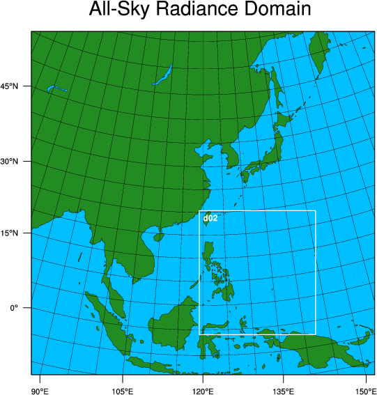

Dual-resolution hybrid data assimilation
Reference:
Source code
Get the pre-compiled code, if you have not done so.
WRFDA/var/build/gen_be_ensmean.exe
WRFDA/var/build/gen_be_ep2.exe
WRFDA/var/build/gen_be_vertloc.exe
WRFDA/var/build/da_wrfvar.exe
are the four executables that will be used in this session.
Choice of your working directory
We recommend running each session in a separate directory, so that it will be easier to check for the necessary input files and look for what output files are created after a successful run.
mkdir /kumquat/users/${USER}/DA/dualres_hybrid
cd /kumquat/users/${USER}/DA/dualres_hybrid
Input data
The dual-resolution hybrid case much the same as the hybrid case. Some additional namelist settings and input files are required, but otherwise the procedure is very similar.
Just as in the standard hybrid case, you will need the basic input files (LANDUSE.TBL, ob.ascii, be.dat), an ensemble, and a first guess. In this case, the first guess is a nest domain of the lower resolution ensemble, and we perform the analysis on this smaller, but higher-resolution domain. The two domains are plotted at right.
|
 |
- ensemble mean
The first step of hybrid data assimilation is to prepare a set of ensembles.
For this practice, a set of 10-member ensemble forecasts is provided under /kumquat/wrfhelp/DATA/WRFDA/dual_res_tutorial_case/fc directory. This ensemble is the larger, lower resolution domain (45 km)
ls -al /kumquat/wrfhelp/DATA/WRFDA/dual_res_tutorial_case/fc/2008091118/
-rw-r--r-- 1 wrfhelp instructor 87460656 Aug 3 07:09 wrfout_d01_2008-09-12_00:00:00.e001
-rw-r--r-- 1 wrfhelp instructor 87460656 Aug 3 07:10 wrfout_d01_2008-09-12_00:00:00.e002
-rw-r--r-- 1 wrfhelp instructor 87460656 Aug 3 07:09 wrfout_d01_2008-09-12_00:00:00.e003
-rw-r--r-- 1 wrfhelp instructor 87460656 Aug 3 07:09 wrfout_d01_2008-09-12_00:00:00.e004
-rw-r--r-- 1 wrfhelp instructor 87460656 Aug 3 07:09 wrfout_d01_2008-09-12_00:00:00.e005
-rw-r--r-- 1 wrfhelp instructor 87460656 Aug 3 07:09 wrfout_d01_2008-09-12_00:00:00.e006
-rw-r--r-- 1 wrfhelp instructor 87460656 Aug 3 07:09 wrfout_d01_2008-09-12_00:00:00.e007
-rw-r--r-- 1 wrfhelp instructor 87460656 Aug 3 07:09 wrfout_d01_2008-09-12_00:00:00.e008
-rw-r--r-- 1 wrfhelp instructor 87460656 Aug 3 07:10 wrfout_d01_2008-09-12_00:00:00.e009
-rw-r--r-- 1 wrfhelp instructor 87460656 Aug 3 07:09 wrfout_d01_2008-09-12_00:00:00.e010
-rw-r--r-- 1 wrfhelp instructor 87460656 Aug 3 07:09 wrfout_d01_2008-09-12_00:00:00.mean
-rw-r--r-- 1 wrfhelp instructor 87460656 Aug 3 07:09 wrfout_d01_2008-09-12_00:00:00.vari
-rw-r--r-- 1 wrfhelp instructor 115162960 Aug 3 07:35 wrfout_d02_2008-09-12_00:00:00
2008091118/wrfout_d01_2008-09-12_00:00:00.e* are ensemble forecasts valid at 2008091200 initialized at 2008091118.
wrfout_d01_2008-09-12_00:00:00.mean and wrfout_d01_2008-09-12_00:00:00.vari are two template files that will be overwritten by a program that calculates ensemble mean from ensemble forecasts.
wrfout_d02_2008-09-12_00:00:00 is the smaller, higher-resolution domain that will be used as the first guess.
- Copy ensemble forecasts and template files to your working directory.
cp -r /kumquat/wrfhelp/DATA/WRFDA/dual_res_tutorial_case/fc/2008091118/ .
- Edit gen_be_ensmean_nl.nl (or copy it from /kumquat/wrfhelp/DATA/WRFDA/dual_res_tutorial_case/gen_be_ensmean_nl.nl)
vi gen_be_ensmean_nl.nl
&gen_be_ensmean_nl
directory = './2008091118'
filename = 'wrfout_d01_2008-09-12_00:00:00'
num_members = 10
nv = 7
cv = 'U', 'V', 'W', 'PH', 'T', 'MU', 'QVAPOR'
/
/kumquat/users/${USER}/DA/WRFDA/var/build/gen_be_ensmean.exe
2008091118/wrfout_d01_2008-09-12_00:00:00.mean is the ensemble mean
2008091118/wrfout_d01_2008-09-12_00:00:00.vari is the ensemble variance
You may use the NCL script /kumquat/wrfhelp/DATA/WRFDA/Hybrid/ncl/ens_mean_std_dev.ncl to make some plots.
cp /kumquat/wrfhelp/DATA/WRFDA/Hybrid/ncl/ens_mean_std_dev.ncl .
cp /kumquat/wrfhelp/DATA/WRFDA/Hybrid/ncl/WRF_contributed.ncl.test .
Edit ens_mean_std_dev.ncl to set the proper date and path path. Note that the "date" is the date and time when the forecast was initialized, while the individual "year", "month", etc. settings are for the forecast valid date/time, 6 hours later.
date = "2008091118"
year = "2008"
month = "09"
day = "12"
hour = "00"
dir = "/kumquat/users/$USER/DA/dualres_hybrid/" + date + "/"
ncl ens_mean_std_dev.ncl
display mean_std_dev.pdf
This script displays the mean and standard deviation for the ensemble at a single level for a single variable. You can change the level and variable by changing these lines a bit further down in the script:
var = "U"
kl = 24
V, W, T, P, and QVAPOR are some other interesting fields to look at.
gen_be_ep2.exe requires 4 command arguments (DATE, NUM_MEMBER, DIRECTORY, FILENAME) as defined below:
/kumquat/users/${USER}/DA/WRFDA/var/build/gen_be_ep2.exe 2008091200 10 ../../2008091118 wrfout_d01_2008-09-12_00:00:00
- Check the output files generated by gen_be_ep2.exe
A list of binary files will be created under 2008091200/ep directory. Among them, tmp.e* are temporary scratch files that can be removed.
gen_be_vertloc.exe generates the input file for vertical localization. This program requires one command-line argument: the number of vertical levels of the model configuration (same value as e_vert in the namelist; for the tutorial example, this should be 45).
cd /kumquat/users/${USER}/DA/dualres_hybrid
/kumquat/users/${USER}/DA/WRFDA/var/build/gen_be_vertloc.exe 45
Run WRFDA in hybrid mode
ln -fs 2008091200/ep ./ep # ensemble perturbation files should be under the ep subdirectory
The first guess is a wrf forecast file from the higher resolution domain
ln -fs /kumquat/wrfhelp/DATA/WRFDA/dual_res_tutorial_case/fc/2008091118/wrfout_d02_2008-09-12_00:00:00 ./fg
We link the mean of the low-resolution ensemble as "fg_ens". WRFDA reads this for collecting mapping info for the lower resolution domain.
ln -fs 2008091118/wrfout_d01_2008-09-12_00:00:00.mean ./fg_ens
ln -fs /kumquat/users/${USER}/DA/WRFDA/run/LANDUSE.TBL .
ln -fs /kumquat/wrfhelp/DATA/WRFDA/dual_res_tutorial_case/ob/2008091200/ob.ascii ./ob.ascii
ln -fs /kumquat/wrfhelp/DATA/WRFDA/dual_res_tutorial_case/be/be.dat ./be.dat
Edit namelist.input (a sample file is provided as /kumquat/wrfhelp/DATA/WRFDA/dual_res_tutorial_case/namelist.input)
cp /kumquat/wrfhelp/DATA/WRFDA/dual_res_tutorial_case/namelist.input .
vi namelist.input
Note that, unlike every other instance of running WRFDA, we actually have two sets of domain information. The analysis will be performed on the second, smaller, 15-km domain.
&domains
e_we = 181,184,
e_sn = 181,196
e_vert = 45,45,
dx = 45000,15000,
dy = 45000,15000,
hypsometric_opt = 2
max_dom = 2,
grid_id = 1, 2,
parent_id = 0, 1,
i_parent_start = 0, 89,
j_parent_start = 0, 22,
parent_grid_ratio = 1, 3,
/
Also notice the following hybrid-related settings:
&wrfvar7
je_factor = 1.33
/
&wrfvar16
ensdim_alpha = 10 # hybrid mode is activated when ensdim_alpha is larger than zero.
alphacv_method = 2
alpha_corr_scale = 500.0
hybrid_dual_res = .true. # Turns on the dual-resolution hybrid option
dual_res_upscale_opt = 3 # DO NOT CHANGE, other options are bad
/
mpirun -np 6 /kumquat/users/${USER}/DA/WRFDA/var/build/da_wrfvar.exe
View the different output files to see how they differ from a 3DVAR assimilation run. For example, in cost_fn and grad_fn, you will see the ensemble terms of the cost function and gradient, respectively.
Try playing around with some of the hybrid-related settings above and compare the results.
You have now completed the WRFDA hybrid assimilation tutorial. You can now move on to the next exercise.
|

{kind=link}